深度解析幻魅
作者：[大幻师]
虽然幻魅这个分支早在魅者诞生之初就已存在，但由于缺乏高难度的副本，多年来并未涌现出幻神级别的高手。直到2022年，高难度副本——封印蜃妖横空出世，由于魅者的输出不足，他们经常成为队友的诟病对象。每次队友的抱怨，都像一把利刃深深地刺入他们的心中。最终，不甘于现状的魅者们纷纷登上了幻魅分支的舞台！
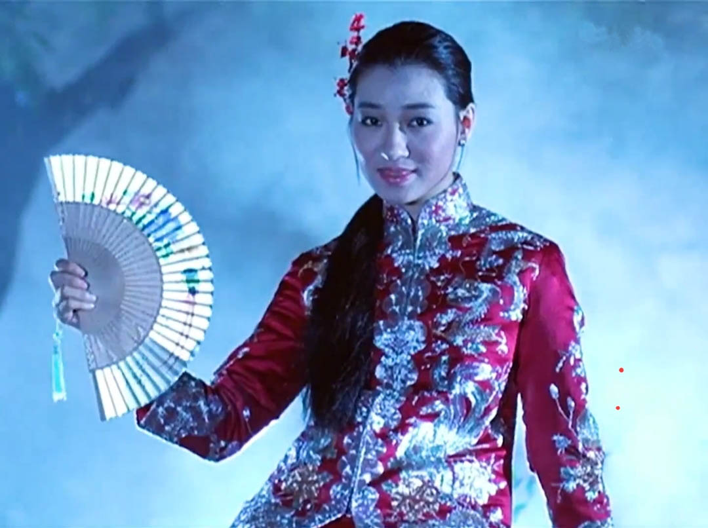
本篇内容
- 幻攻击的构成
- 暗香的伤害计算公式
- 暗香伤害的波动性
- 忽视幻抗
- 幻魅的代价
- 幻魅的优势
- 幻魅在各副本的体验指数
- 本世纪最拉风的三大幻神
- 其它特种幻神
幻攻击的构成
- 清平乐
幻攻击加成最高的技能，尽可能往高点
- 暗香
如上图，在怪物血量比较高的时候，可直接视为幻攻击增加20183，尽可能点高
- 试香罗
这里只要关注对怪物伤害提高部分
- 弦曲献仙音
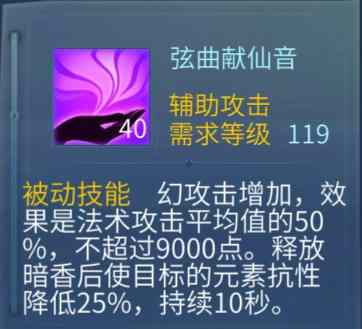
80级天赋技能，需要平均法术攻击达到1.8万才能吃满9000幻攻击加成
- 武器
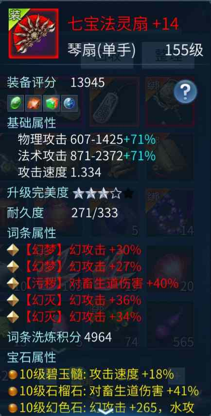
尽可能带多条幻攻击，运气好洗出清平乐,暗香等技能也是很极品，另外武器还可以散打幻色石增加少量幻攻击
- 仙家
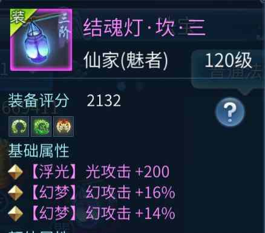 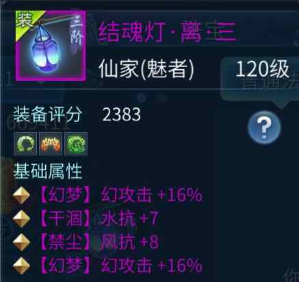
Tip
注意：只有离和坎的基础属性可以洗出幻攻击
Tip
注意：只有 坎，巽，垦 的额外属性才可以洗出幻攻击
暗香的伤害计算公式
基础幻攻击
基础幻攻击=(清平乐幻攻击+暗香幻攻击+弦曲献仙音幻攻击+幻色石幻攻击)*(1+幻攻击百分比)
最终幻攻击伤害
最终幻攻击伤害=基础幻攻击*(1+试香罗百分比+X）+ 平均法术攻击
Warning
注意:武器和仙家的7道伤害加成，或者BOSS伤害加成，都算到上面公式的X里面
以我号做例子(非实际，因为截图的时候用鬼武器，技能比平时多了多4级）
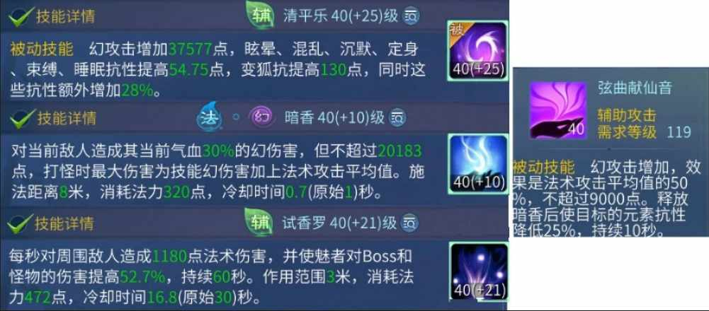
则计算过程
基础幻攻击 =（35577 + 20183 + 9000）* (1 + 2.22) = 208527.2
最终幻攻击伤害 = 208527.2 * (1 + 0.527) + 20000 = 348254
暗香伤害的波动性
对于常规怪，暗香的伤害是稳定的，而当我们平均法术攻击小于怪物法术防御时，则会表现出波动性。具体的波动区间在【公式计算出来的理论伤害,公式计算出来的理论伤害*（最小法术攻击/最大法术攻击）】，
例如理论伤害是20万，最小法术攻击10000，最大法术攻击20000，那么波动区间最小值就是
波动最小值=200000*（10000/20000）=100000
最终打怪时，伤害会在100000-20000之间波动，并且这种波动是均匀的，不会偏向最大或最小，因此玩极致幻魅，平均法术攻击能达到2.5万最好。
那么准确 平均法术攻击小于怪物法术防御多少时,才会波动呢,以25000法术防御的巫先生为例
25000平均法术攻击下稳定
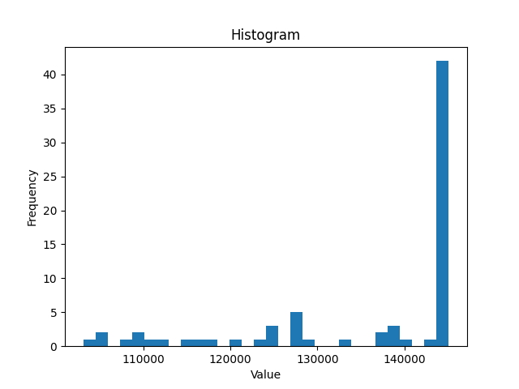24000平均法术攻击下稳定
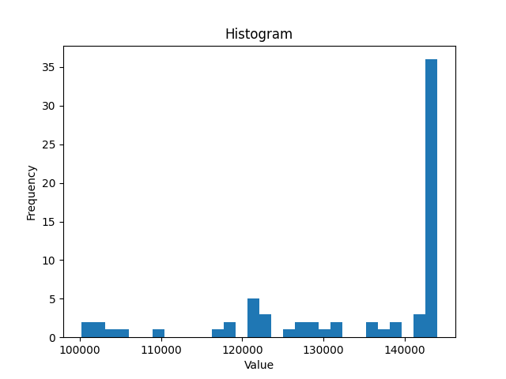23000平均法术攻击下稳定
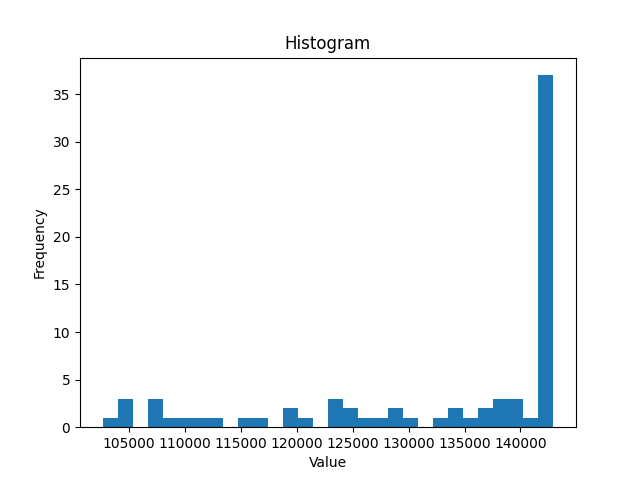20000平均法术攻击下波动
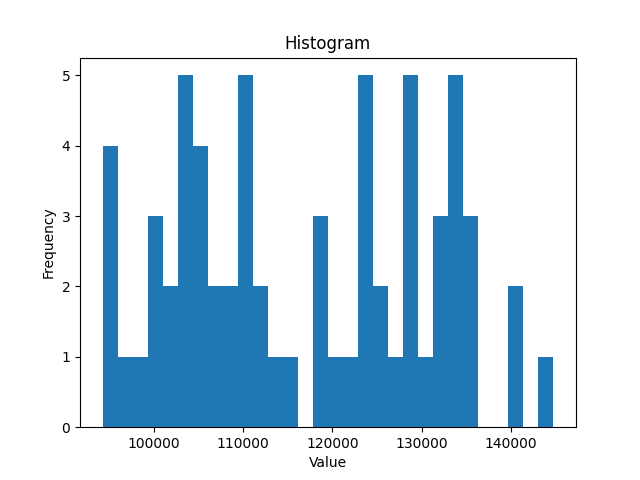
由此猜测,平均法术攻击<目标法术防御的80%时,伤害会开始波动
Tip
注意：任何情况下,都可能出现小波动,不存在绝对的稳定,这里的波动一般指的是如上图2万平均法术攻击打2.5万法术防御这样子非常明显波动的情况
忽视幻抗
暗香的幻攻击属于元素攻击，那么忽视幻抗也是必须堆的，还好策划对幻攻击有照顾，因此只要能堆到150忽视幻，就能通吃所有副本了。 但大家的定位不同，我列举一些参考吧
常规副本幻魅
无需堆忽视幻
十二蜃妖搭配
| 忽视来源 | 加成 | 说明 |
|---|---|---|
| 帮会修炼 | 62 | 满级33级 |
| 功勋 | 15 | 点满+15 |
| 背饰 | 20 | 做2幻背饰 |
| 纹饰 | 18 | 6个3级纹饰 |
| 仙家 | 0 | 无仙家 |
| 合计 | 115 |
十四蜃妖搭配
| 忽视来源 | 加成 | 说明 |
|---|---|---|
| 帮会修炼 | 62 | 满级33级 |
| 功勋 | 15 | 点满+15 |
| 背饰 | 30 | 做3幻背饰 |
| 纹饰 | 30 | 6个5级纹饰 |
| 仙家 | 18 | 2阶仙家+18忽视(记得换2套洗，不影响1套PVP) |
| 合计 | 155 |
幻魅的代价
经常有人说，做了幻魅后，控制抗性，强控，气血都掉麻了，我们分析下是不是这么一回事。 根据上面的幻攻击构成，我们得出影响的部位有武器，仙家，人格笔。
一、 武器的影响
通常情况下，武器是用额外的一把，而且是散打石头，所以武器没啥影响
二、 仙家的影响
我们看看这些属性通常洗了什么词条。
1.离和坎的基础属性
这2个部位通常是洗忽视光，但是大部分魅者普遍忽视都不高，而且很多玩家都有100+的光抗，影响有限
2.坎，巽，垦 的额外属性
这3个部位的额外属性通常是洗强控和忽视光,不过词条值很少，强控单条3-5之间，忽视光4-6之间，以当前藏宝阁一个四阶细节魅来说。
总共加了18点强混，6点忽视光，但是请注意这个已经是自称斗魂魅的四阶魅才能洗出来的属性。按照我原来的三阶属性，8点强控，5点忽视光就已经很不得了，而且四阶魅也不会去造幻魅，所以我们主要讨论三阶及以下。
对于强混魅来说，38.5强混才加1秒混乱，这样个位数的强控，影响实在太有限。
三、人格笔的影响
幻攻击构成需要三大神技，清平乐,暗香,试香罗,清平乐是PVP和PVE共用的核心技能，本来都会去洗。所以只要不做极致的幻魅，原本的PVP人格笔就可以用。因为对于大部分幻魅而言，只是为了做个体面的输出。追求极致的幻魅，可以选择再买一只笔做PVE，像凤舞目前7星的成品笔，7000万就可以拿下。
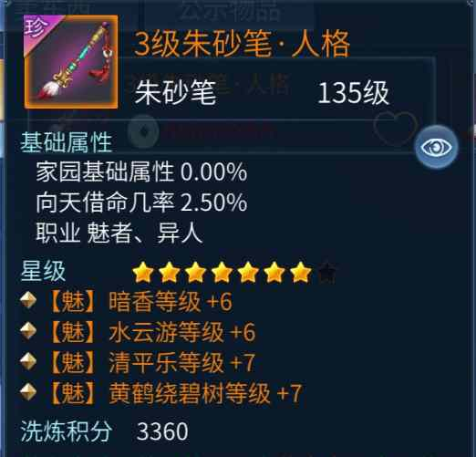
综上所述，影响并不大，完全看个人意愿选择
幻魅的优势
操作简单,1分钟按1下试香罗,剩下无限暗香,非常轻松.不像偃师需要叠连击,射手上双火,影灵上双音等等
省蓝,一发50级的暗香320蓝,如果打上蓝宝石,最小的蓝药就够补,非常舒服.
降低奶妈压力,保护队友,部分妖可以控制变狐,试香罗可以为队友加少量血
打造相对便宜,输出职业一把核武胚子可能就要2000,再加上洗练,保底5000打底,而且仅仅有核武还不够,得配套致命,核戒等等.花个几万.幻魅弄个红色的3幻武器,忽视弄到100+,就可以打出不错的伤害,
幻魅在各副本的体验指数
| 副本 | 体验指数 | 说明 |
|---|---|---|
| 封印蜃妖 | ★★★★★ | 单体BOSS，防御高，幻抗低，理想目标 |
| 联赛 | ★★★★★ | 幻魅是拆塔狂魔 |
| 盘古 | ★★★★★ | 单体BOSS |
| 帮花 | ★★★★☆ | 全程畜生道怪物，散打石榴石 |
| 寇岛 | ★★★★☆ | 虽然很多小怪，但是一直打BOSS，伤害前5没问题 |
| 剧情 | ★★★★☆ | 单体BOSS |
| 十世镜 | ★★★★☆ | 单体BOSS |
| 师门守卫 | ★★★★☆ | 前期小怪畜生道，单体BOSS |
| 出海 | ★★★★☆ | 小怪全部是畜生道，散打石榴石，通吃 |
| 一条龙 | ★★☆☆☆ | 一条龙传统核武开群攻比较好 |
本世纪最拉风的三大幻神
- 凤舞九天-大幻师
这世界上有一种魅者，他不会有朋友，也不会有爱，他拥有的只是无尽的幻伤害，而我正是这种幻魅。
- 三生无悔-大蘑菇
谁在称无敌，哪个敢言不败，过度的自信和骄傲往往会导致失败!
- 临江仙-妖孽不偷袭
已经记不清封印多少妖了.
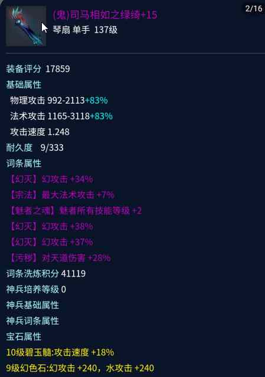
其它特种幻神
- 罗汉果-白衣
罗汉若有怜神意，可否许我四幻器？
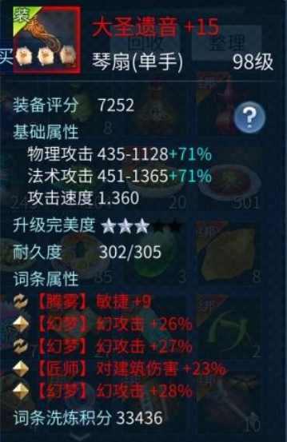